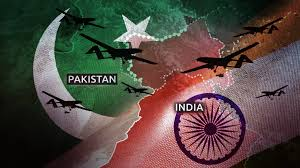

India vs Pakistan Military Comparison 2025
Published Date : June 2, 2025
As of 2025, India and Pakistan continue to maintain significant military forces, reflecting their ongoing strategic rivalry. This comparison provides an overview of their respective military capabilities, including manpower, defense budgets, land, air, naval forces, and nuclear arsenals.
Manpower and Defense Budgets
- India:
- Active personnel: Approximately 1.46 million
- Reserve personnel: Approximately 1.15 million
- Paramilitary forces: Approximately 2.5 million
- Defense budget: Around $86.1 billion
- Pakistan:
- Active personnel: Approximately 654,000
- Reserve personnel: Data not specified
- Paramilitary forces: Approximately 500,000
- Defense budget: Around $10.2 billion
Land Forces
- India:
- Tanks: Approximately 4,201 (including T-90 Bhishma and Arjun)
- Armored vehicles: Over 148,000
- Pakistan:
- Tanks: Approximately 2,627
- Armored vehicles: Data not specified
Air Forces
- India:
- Total aircraft: Approximately 2,229
- Fighter jets: Approximately 513 (including Rafale, Su-30MKI, Tejas)
- Helicopters: Approximately 899
- Pakistan:
- Total aircraft: Approximately 1,399
- Fighter jets: Approximately 328 (including JF-17 Thunder, F-16)
- Helicopters: Approximately 373
Naval Forces
- India:
- Total naval assets: Approximately 293
- Aircraft carriers: 2
- Destroyers: 13
- Frigates: 14
- Corvettes: 18
- Submarines: 18
- Pakistan:
- Total naval assets: Approximately 121
- Frigates: 9
- Corvettes: 9
- Submarines: 8
Nuclear Capabilities
- India:
- Estimated nuclear warheads: 180
- Missile systems: Agni-V (range up to 8,000 km), Agni-VI under development
- Pakistan:
- Estimated nuclear warheads: 170
- Missile systems: Shaheen-III (range up to 2,750 km), Ababeel (MIRV-capable, under development)
Conclusion
India maintains a significant advantage over Pakistan in terms of manpower, defense budget, and overall military assets. However, both nations possess credible nuclear deterrents and continue to modernize their forces. The strategic balance in South Asia remains delicate, with both countries emphasizing defense preparedness amidst ongoing regional tensions.
For a detailed analysis of recent military operations, read our article on Operation Sindoor